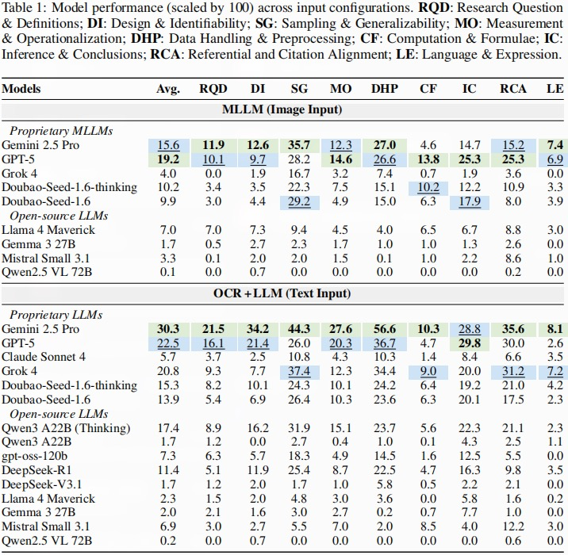

Place the paper PDF at pdfs/ScholScan.pdf to enable inline viewing.

Overview: End-to-end materials for paper replication, including dataset, evaluation scripts, and inference pipelines.

Taxonomy: Organization of tasks/modalities and experiment settings (main results and RAG variants).
